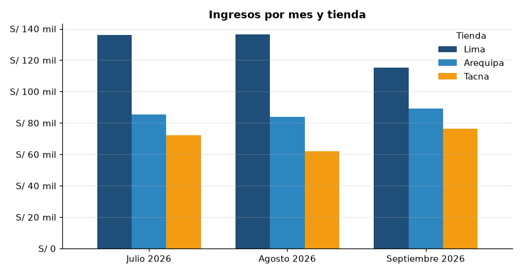
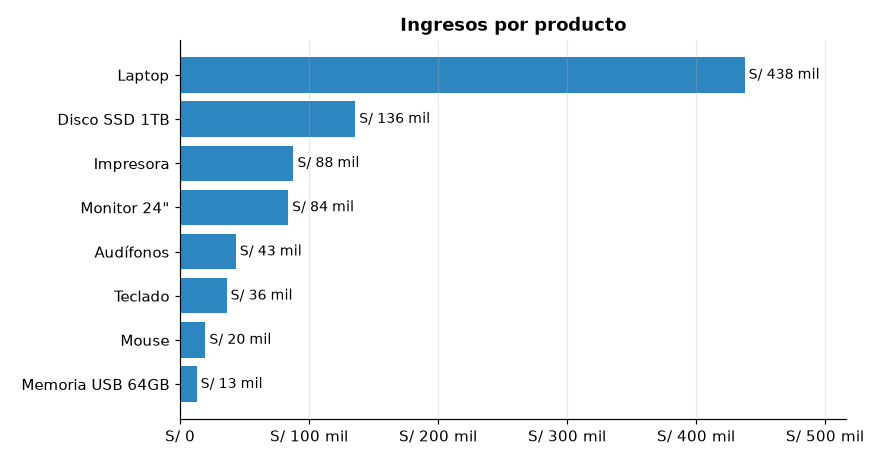
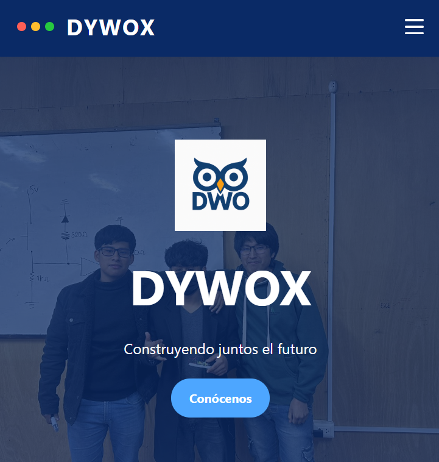

Proyectos Detallados
Generador Automático de Reportes de Ventas
Programa en Python que automatiza el reporte mensual de ventas de una empresa. Lee el Excel de cada tienda, corrige los errores más comunes (filas vacías, nombres mal escritos, categorías equivocadas, datos faltantes y ventas repetidas) y registra cada cambio. Luego calcula ingresos, unidades, ticket promedio y ventas por tienda, mes, producto y vendedor, y genera un reporte en Excel con formato y gráficos. Una tarea de horas pasa a tomar segundos.
Capturas:


Tecnologías usadas:
Python, pandas, openpyxl, matplotlib, Excel
Programa de Automatización Personal
Este programa permite automatizar tareas cotidianas en la computadora, como renombrar archivos, mover carpetas y generar reportes automáticos.
Capturas:


Tecnologías usadas:
Python, Tkinter, Automatización de tareas
← Volver a ProyectosCalculadora Científica en C++
Proyecto de consola en C++ que realiza cálculos matemáticos avanzados, incluyendo funciones trigonométricas, algebraicas y estadísticas.
Capturas:


Tecnologías usadas:
C++, Consola, Funciones matemáticas
← Volver a Proyectos